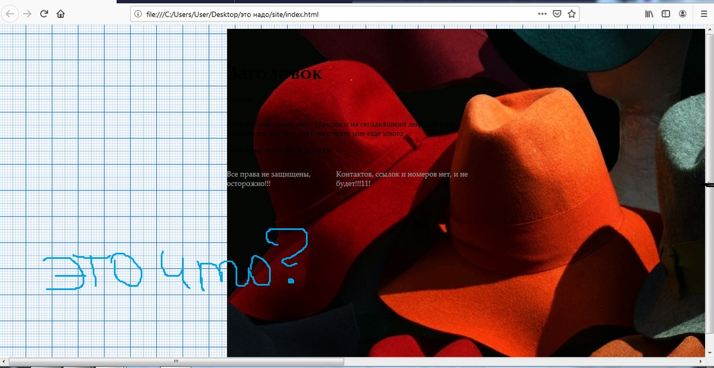
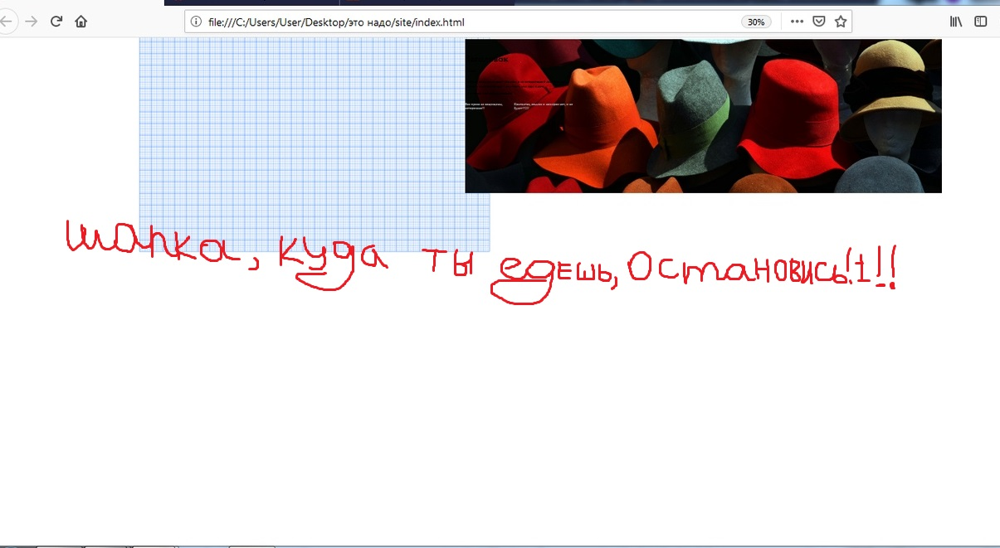

Если вам до сих пор не понятно, что происходит сверху, то я отвечу вам - это шапка
Всем привет, меня зовут Максим и на
Я студент ИГХТУ, второкурсник
Из всех своих многочисленных увлечений могу подчеркнуть: выживание, хождение по улицам, посещение занятий в университете
прилагаю фото своей кошки:
В процессе, ввиду своего неумения я столкнулся с большим количеством трудностей, но на память у меня осталось только это:
(Кстати, "предисловие" осталось со времен моей борьбы с шапкой, решил оставить на память)
Если, вам понравилось, разрешаю вам поиграть на моем ксилофоне ниже: